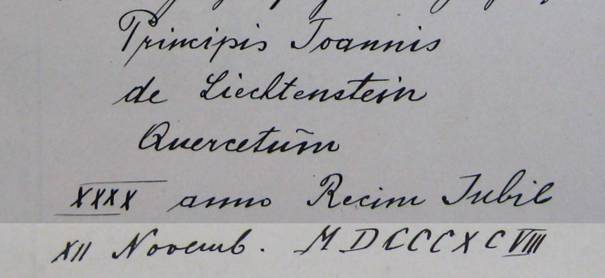
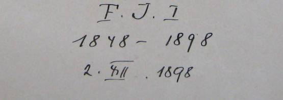

Wirtschftsplan des Revieres Vodìrady
Im Jahre 1898 wurde aus Anlass des 40-jährigen Regierungs-Jubiläums Seiner Durchlaucht des regierenden Fürsten Johann II. von und zu Liechtenstein im W.T. 68 an der Habr-Jewaner Strasse 58 Stk Eichenheister – dem Alter Seiner Durchlaucht entsprechend – gepflanzt, u. z.:
18 Stück Quercus rubra
20 -"- Quercus sessiliflora
20 -"- Quercus pedunculata
Der in dieser Eichengruppe ausgestellte Gedenkstein zeigt folgende Inschrift:

Zum Andenken an das 50-jährige Regierungs-Jubiläum Seiner Majestät unseres allergnädigsten Kaisers Franz Josef I. wurde im W.T. 67 ebenfalls an der Habr-Jewaner Strasse 5 Stk Ahornheister gepflanzt, mit Bezug auf Höchstdessen 5 Dezennien währende glorreiche Regierung.
Der an der Strasse angebrachte Gedenkstein zeigt die Widmung:
